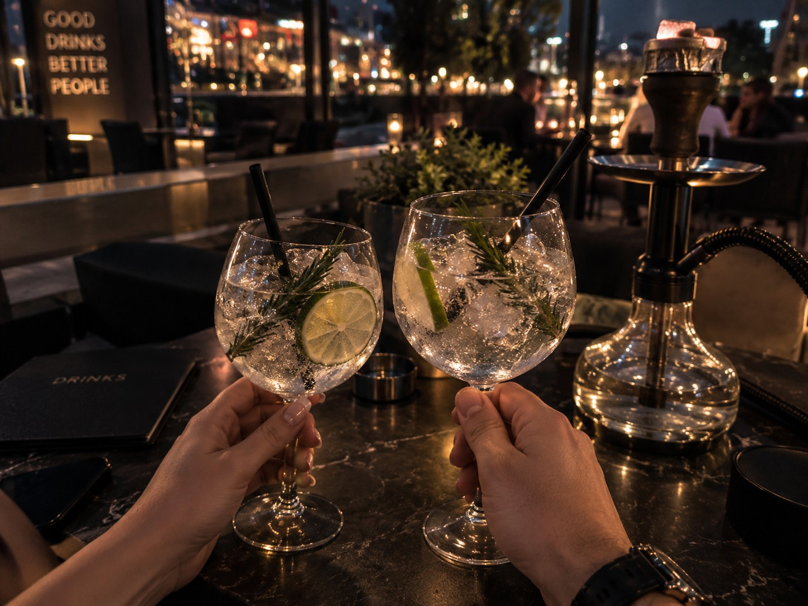
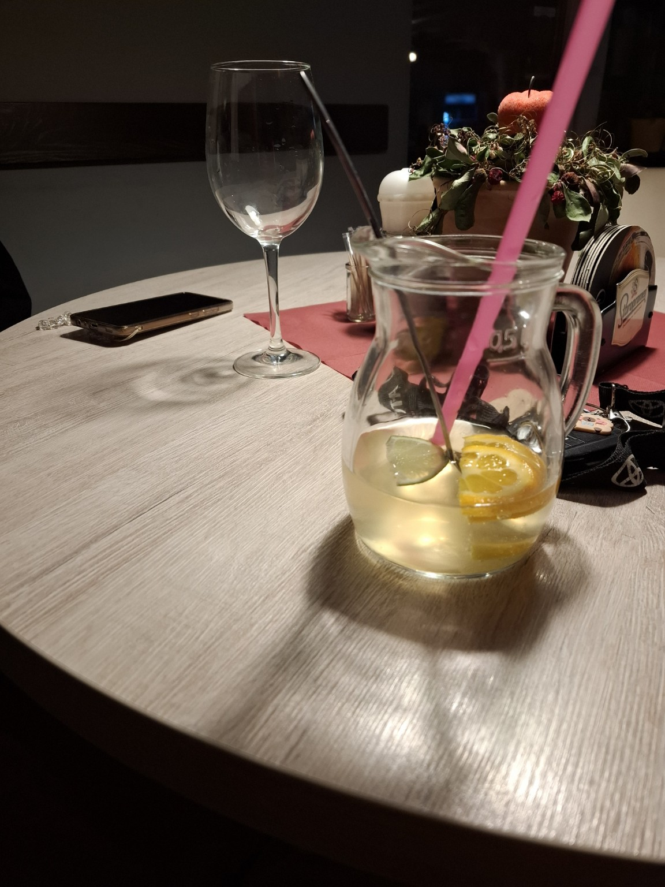

Divoký pátek
Znali jsme se už delší dobu z práce. Prakticky každý den jsem si k Lucce chodil sednout, abychom si mohli povídat a hlavně se spolu smát. Vždycky se našlo nějaké téma a postupně bylo čím dál víc vidět, že si navzájem dokážeme udělat pracovní den o něco příjemnější.
Lucka se mi líbila už od začátku. Jenže v mojí hlavě byla něco jako business class v Emirates – pěkný se na ni dívat, ale člověk tak nějak automaticky počítá s tím, že na ni nemá. Takže jsem vlastně ani nic nezkoušel a upřímně jsem si ze začátku myslel, že se se mnou nebude chtít ani moc bavit.
Opak byl pravdou. Čím víc jsme se poznávali, tím víc jsem zjišťoval, kolik toho máme společného. Ať už šlo o humor, názory nebo pohled na svět, pořád se objevovalo něco dalšího, v čem jsme si rozuměli.

Pak přišel ten pátek.
Po práci jsme společně s partou vyrazili na dýmku a pár drinků. Poprvé jsem Lucku viděl mimo pracovní prostředí a z obyčejného večera se poměrně rychle stalo něco, co jsem rozhodně nečekal.
Dodnes vlastně přesně nevím, jak k tomu došlo. Lucka odešla na toaletu a já se tam chvíli po ní vydal taky. Otevřela dveře, nějak jsme se k sobě dostali blíž… a přišla první pusa.
V tu chvíli mi bylo úplně jedno, jestli jsem přišel na dýmku, na drink nebo kde vlastně jsem. Jediné, co jsem věděl jistě, bylo, že bych se na ten záchod docela rád ještě jednou vrátil.
A taky že vrátil.
Naše nenápadná „záchodová akce“ se během večera ještě několikrát zopakovala. Z obyčejného pátečního posezení se tak stal jeden z nejzajímavějších večerů mého života.
A přestože jsme tehdy vůbec netušili, co z toho bude, jedno bylo jasné – od toho pátku už to mezi námi nebylo úplně stejné.
Jak to šlo dál?
Po tom pátku jsme si začali psát mnohem intenzivněji. Jenže krátce nato Lucka odešla z práce a najednou zmizela jedna věc, na kterou jsem si až podezřele rychle zvykl – že ji každý den vidím.
A právě tehdy mi začalo docházet, jak moc mi vlastně chybí.
Jednou jsem jí dokonce zavolal přímo z práce. Oficiální verze byla, že mě zajímá, jak se má a jak se jí líbí v nové práci. Ta méně oficiální a podstatně pravdivější verze byla jednodušší – prostě jsem ji potřeboval slyšet.
Od té chvíle jsem víceméně jen vymýšlel důvody a příležitosti, jak zařídit, abychom se zase mohli vidět.
Byla zima, blížily se Vánoce a jedna taková příležitost nakonec přišla. Lucka byla na vánočních trzích a já měl možnost ji vyzvednout a odvézt domů. Ještě předtím jsem narychlo sháněl nějaký menší dárek. Nic velkého – chtěl jsem jen, aby měla pod stromečkem alespoň něco, co si může otevřít ode mě.
Když jsme se potom loučili, dostal jsem pusu.
A když jsem odjížděl, jednu věc jsem věděl naprosto jistě: V Boskovicích rozhodně nejsem naposled.
Kafe, auto a večery bez hodinek
A taky jsem nebyl.
Za Luckou jsem začal jezdit častěji. Potkávali jsme se třeba na benzince, dali si kávu a potom dokázali sedět v autě a povídat si dlouho do večera. Nebyl potřeba žádný speciální program. Stačilo nám být spolu, kecat o všem možném a nějak nevnímat, kolik je hodin.
Bylo vidět, že je za ty návštěvy ráda. A já se toho společného času zase nemohl nabažit.
Postupně už nezůstalo jen u občasné návštěvy. Začal jsem jezdit častěji, někdy dokonce i během týdne, a jedním z našich pravidelných míst se stala místní Blue Queen.
Právě tam vznikly naše pravidelné tatarák sessions. Tatarák, Lucka se sklenkou vína a večer, u kterého bylo prakticky předem jasné, že rozhodně nebude „jen na hodinku“.

O zážitek víc
Pak přišla další premiéra. Pozval jsem Lucku k sobě domů.
Přišla.
A řekněme, že od toho večera jsme spolu měli zase o jeden společný zážitek víc.
Postupně jsem za ní jezdil dál a něco se nenápadně měnilo. Už jsem nebyl jen ten člověk, který přijede, stráví s ní pár hodin a zase odjede.
Začal jsem poznávat její domov, její soukromí a hlavně ji samotnou úplně jinak než předtím.
A z návštěv, které původně vznikaly jen proto, že jsem hledal jakoukoliv možnost ji znovu vidět, se pomalu stávala běžná součást našich životů.
Kde jsme teď?
Jsme ve fázi, kdy už oba známe příběhy toho druhého. Víme, co máme za sebou, co od života chceme, v čem jsme úplně rozdílní a v čem si naopak rozumíme možná víc, než jsme původně čekali.
Trávíme spolu víkendy, jezdíme na výlety a pořád vymýšlíme něco, co můžeme podniknout. Bowling, kulečník, šipky, minigolf… a dokonce už došlo i na společný tanec.
Ten mimochodem probíhal na párty, kde asi třikrát vypadl jistič, protože lednice svítila tak intenzivně, že kvůli ní DJ nakonec musel vypnout projektor. Některé večery si člověk prostě nevymyslí.
Umíme se spolu smát úplným blbostem, ale zároveň se dokážeme bavit o věcech, které už tak jednoduché nejsou. O životě, o budoucnosti i o tom, co vlastně každý z nás chce.
A kde budeme za pár měsíců nebo za pár let?
To dnes neví ani jeden z nás.
Jednu věc ale vím jistě. Za nás dva budu bojovat dál. A ať už tenhle příběh jednou dopadne jakkoliv, tohoto období svého života nikdy litovat nebudu.
Pokračování se právě píše…